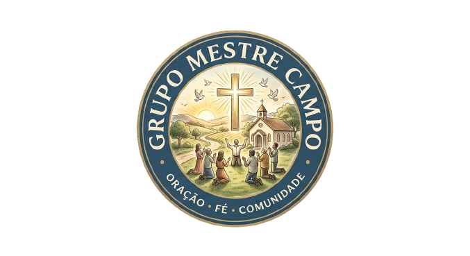
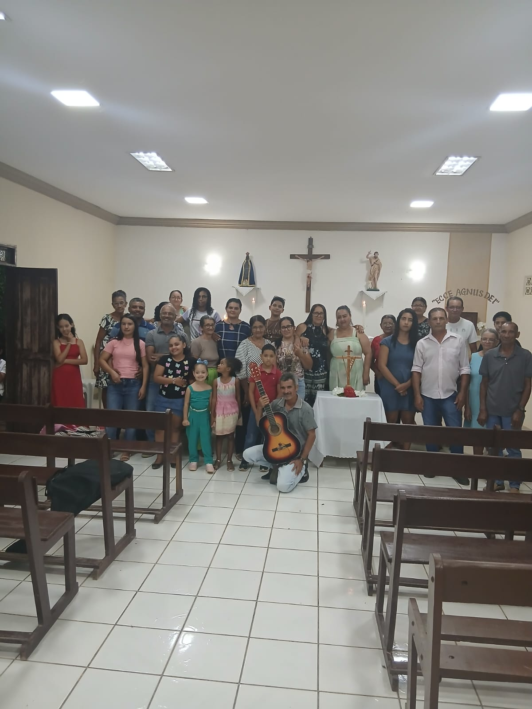

O grupo Mestre campo é um movimento católico que já dura décadas espalhando o evangélio e realizando encontros pelas comunidades vizinhas.

Telefone: (77)99966-9882
Endereço:
Comunidade Mestre campo
Malhada - Bahia
O Grupo Mestre Campo é um espaço de oração e comunhão dedicado a fortalecer a fé e os laços de fraternidade entre as comunidades vizinhas. Com o coração aberto e o espírito missionário, nosso grupo não se limita a um único espaço; nós vamos ao encontro do próximo, visitando e integrando as comunidades ao nosso redor.
Realizamos celebrações e cultos católicos que buscam renovar a esperança e a espiritualidade de cada membro. Acreditamos que a fé é um caminho que se percorre em conjunto, por isso, nossas atividades são marcadas pela itinerância e pela acolhida.
Aqui, crianças, jovens, adultos e idosos compartilham momentos de louvor e reflexão. Entendemos que a troca de experiências entre diferentes idades enriquece nossa caminhada cristă e fortalece a identidade de nossa comunidade.